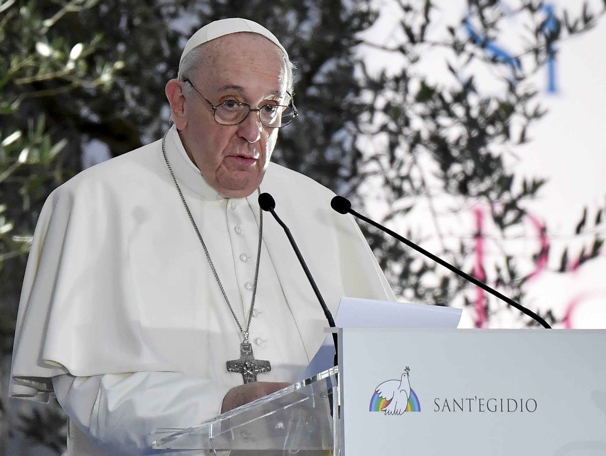
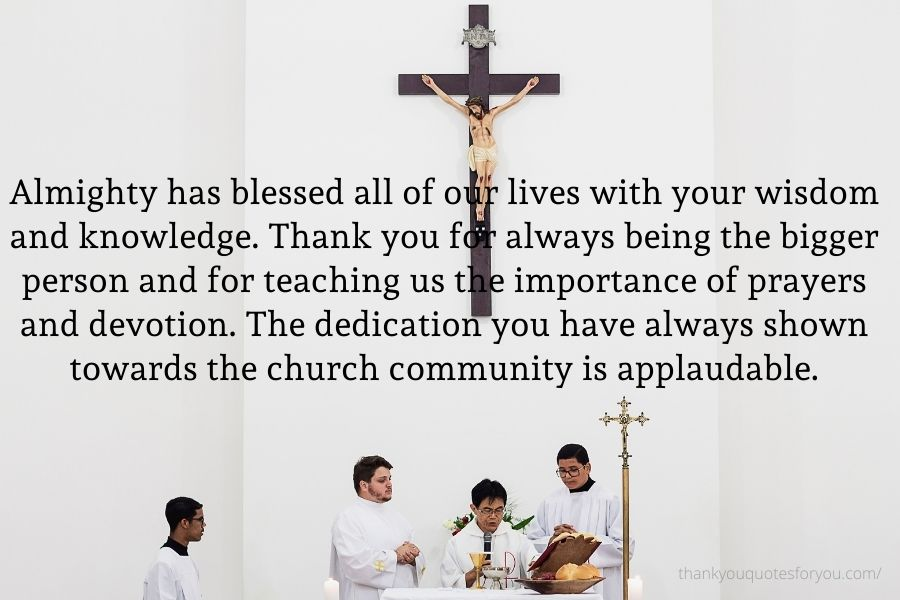
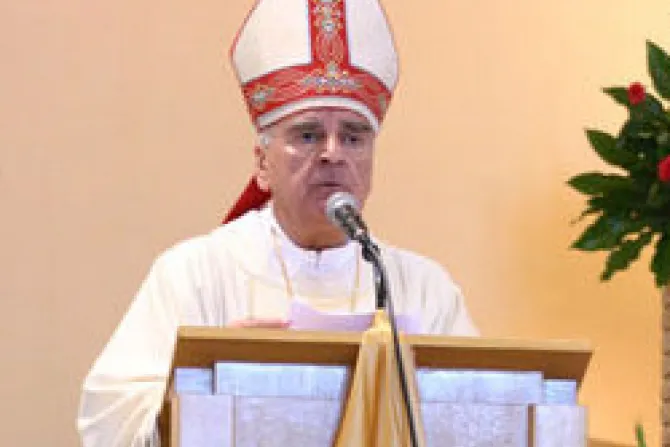
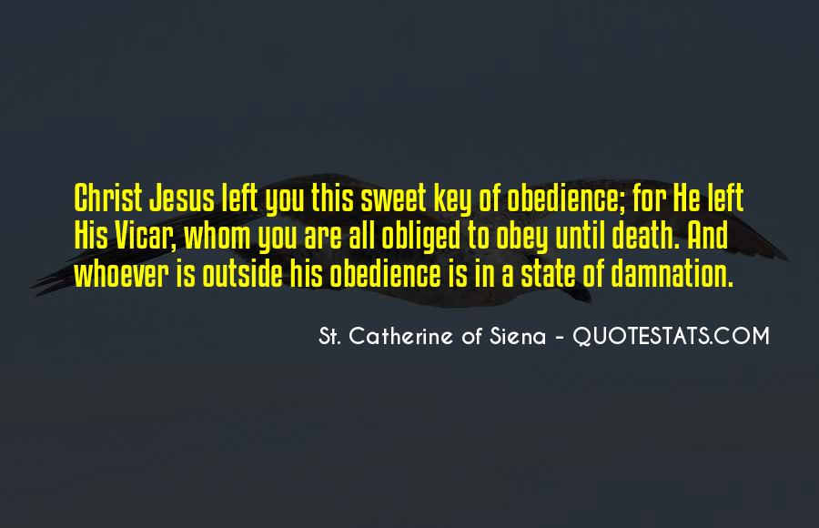

 Pope Francis has changed church law to explicitly criminalize the sexual abuse of adults by priests who abuse their authority and to say that laypeople who hold church office can be sanctioned for similar sex crimes.
The new provisions, released Tuesday after 14 years of study, were contained in the revised criminal law section of the Vatican’s Code of Canon Law, the in-house legal system that covers the 1.3 billion-strong Catholic Church.
The most significant changes are contained in two articles, 1395 and 1398, which aim to address major shortcomings in the church’s handling of sexual abuse. The law recognizes that adults, too, can be victimized by priests who abuse their authority, and said that laypeople in church offices can be punished for abusing minors as well as adults.
Every gathering and celebration we have had in this church holds a special memory in each one of our life. Thank you for being kind enough to encourage us into gatherings and prayers.
My faith in God will never be doubted or be in dilemma. Because you have laid a very firm and strong foundation in my mind and in my soul. Thank you for being the guiding light of spirituality in my life. It goes without saying that you are the reason why so many people have faith and belief in God.By Rev. Philip Monroe

Local bishop bars Medjugorje seers from parish, clarifies role of messages
Oct 3, 2009 / 05:38 am
Bishop Ratko Peric of Mostar-Duvno in Bosnia and Herzegovina has sent letters to the pastor and a parochial vicar in Medjugorje, emphasizing that the town's parish is not a “shrine” and specifically directing them that they and the parish are not to promote the alleged Marian apparitions.
The separate June 12 letters from Bishop Peric to Friar Petar Vlasic, the parish priest of Medjugorje, and Friar Danko Perutina, its parochial vicar, said that alleged messages of apparitions and commentaries on them are not to be published. Italian translations of the letters were posted by the diocese on its website on September 26.
 Philip came gradually to know the people he was to live with, and by fragments of conversation, some of it not meant for his ears, learned a good deal both about himself and about his dead parents. Philip's father had been much younger than the Vicar of Blackstable. William Somerset Maugham
President Uhuru Kenyatta and First Lady Margaret Kenyatta at St Francis of Assisi Catholic Church in Nyali yesterday.
[PSCU]
President Uhuru Kenyatta yesterday joined worshippers at St Francis of Assisi Catholic Church In Nyali, Mombasa, where he called on Kenyans to pray for national unity.
The Head of State who was accompanied by First Lady Margaret Kenyatta, said national unity was the foundation for the country to achieve its development agenda.
He said Kenyans should learn to live, work and respect one another, adding cohesion in the country would enable Kenyans to achieve their individual economic aspirations.
“God is my light.” Such is the motto of The Catholic University of America: God is my light. The Constitutions of the Dominican Order make a similar statement: “God is the light and source of our study.” These are the principles we profess. They sum up what together we want to be, and where we take our stand in this world. For we have heard that Jesus Christ “is the true light who enlightens everyone coming into this world” (Jn. 1:9), and we believe that God is now present teaching us who he is. God gives us light in many ways. By Rev. James Brent